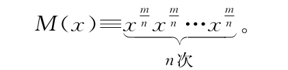
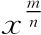

现在我们可以模仿上面的过程，定义机器：

一方面，这只不过是M（x）=xm的一种愚蠢写法，我们知道如何对它求导。另一方面，我们也可以用前面发明的那个真正有力的锤子（可以对n台乘到一起的机器求导的锤子）来对M（x）求导。这样我们就用两种方式描述了同一件事情，因此可以在它们中间划等号，然后尝试分离出

的导数。不过这个过程还是很折磨人，因此我们尝试想一个不那么乏味的方式来做这件事情。如果想不出更简单的方式，还可以回来走原来的老路，因此不妨试一试看有没有捷径。